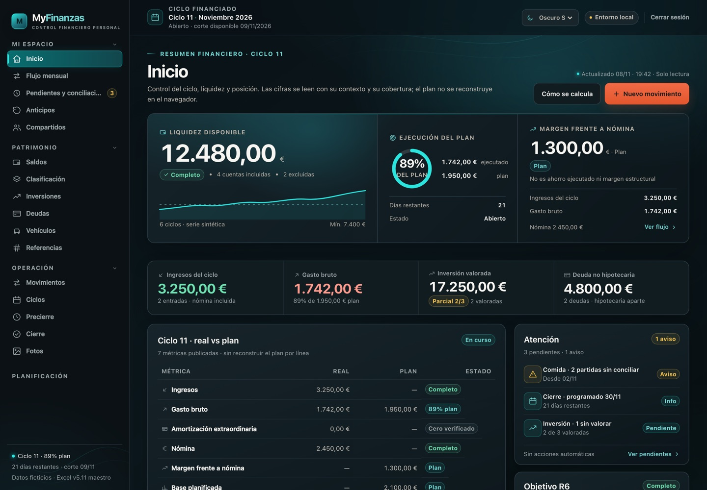
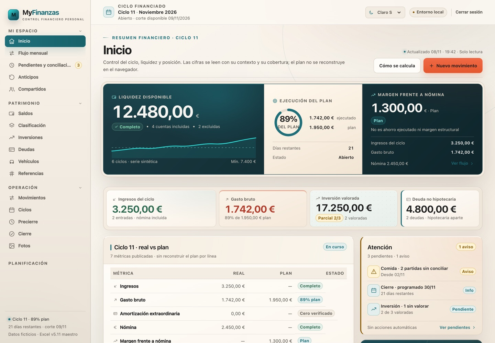
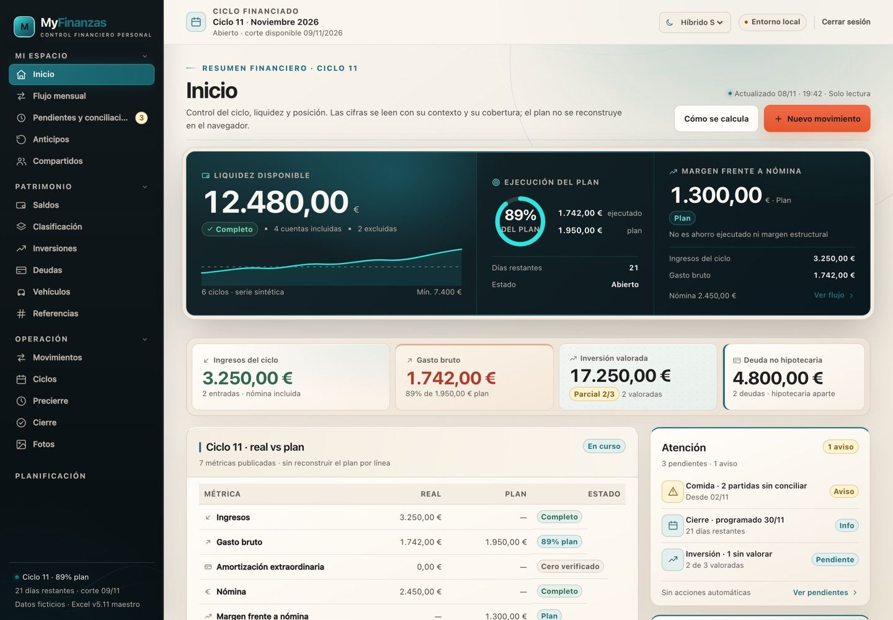
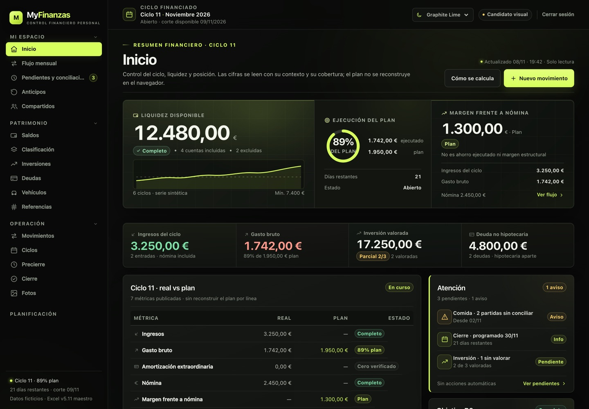
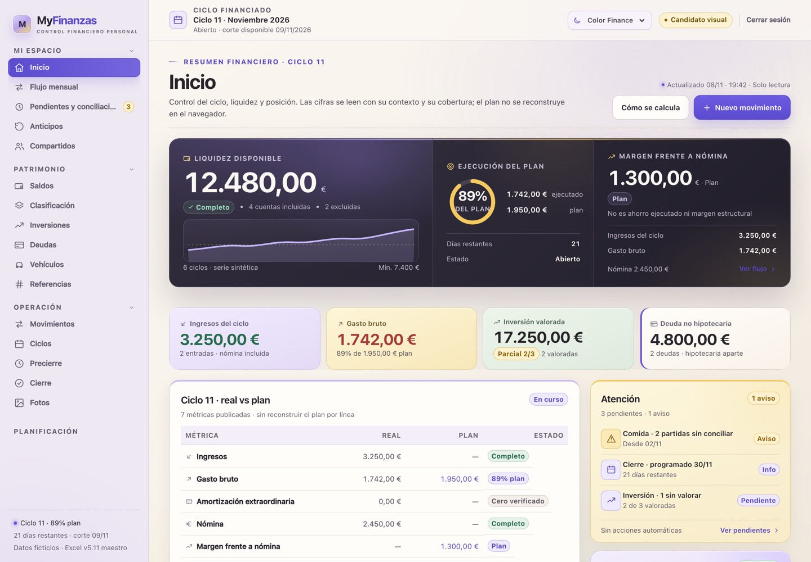
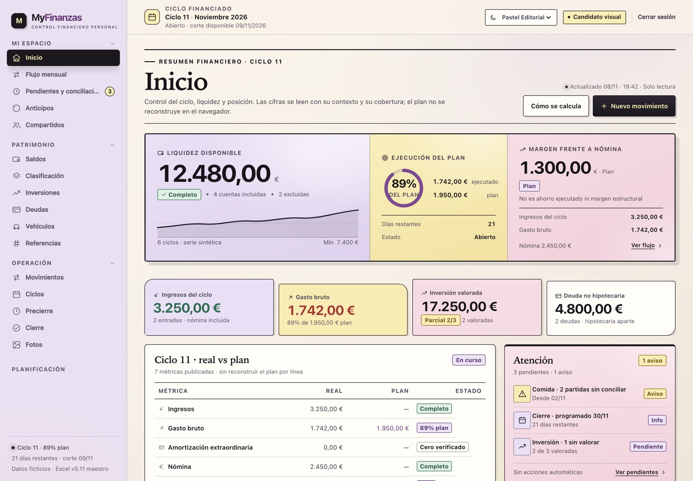

MyFinanzas · Colección visual
Seis identidades, un solo producto
Dark, Light y Hybrid finales conviven con tres candidatos que comparten arquitectura, componentes y datos.
Las seis capturas usan la misma composición C y el mismo contenido sintético. Los candidatos son exploraciones aisladas; las tres primeras son la referencia vigente.






Una familia, no seis apps
Mismos KPI, misma navegación, mismos componentes y misma semántica. Cambian superficies, color y tipografía, no la estructura funcional.
Diferenciación
Dark es tecnología; Light es papel editorial; Hybrid es navegación oscura con workspace cálido. Graphite es grafito/lima; Color Finance es color estructurado; Pastel es impresión creativa.
Límite actual
Solo Inicio a 1440. Los candidatos no tienen Movimientos, móvil, tablet ni estados finales. No se han integrado ni modificado tokens de producción.
Dark-s intacto. Light y Hybrid finales incluyen las correcciones aprobadas de Atención y detalle de Movimientos. Los candidatos no son temas de producción.